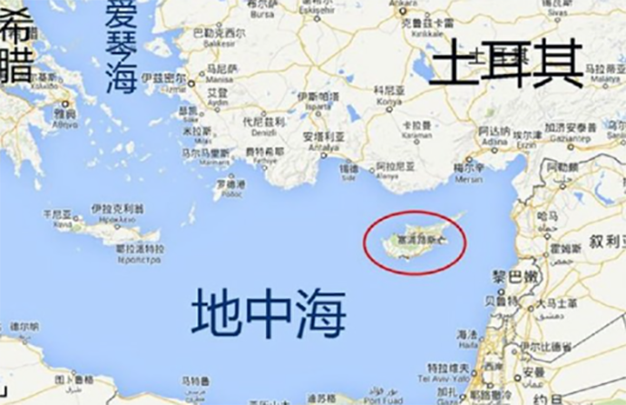
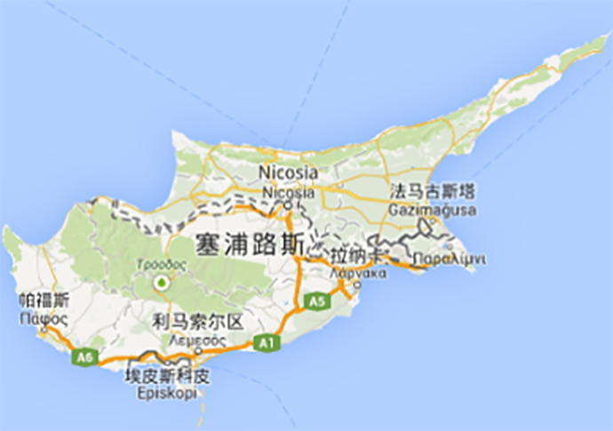

项目优势：
欧盟身份：塞浦路斯公民身份，同时获得欧盟公民身份，可在欧盟成员国自由定居、学习、工作及享受福利
免签全球：免签全球160多个国家和地区，包括美国和加拿大
审理快递：递交申请后约6个月获批护照
门槛较低：无经商背景、学历和语言要求
三代移民：一人申请，全家三代人可同时获得公民身份
国家优势：税率低、税种少；无遗产税、股息收益税等；语为通用语言，便于在当地生活、学习
免签国家：
欧洲
英国、奥地利、比利时、保加利亚、克罗地亚、丹麦、捷克共和国、爱沙尼亚、芬兰、法国、德国、匈牙利、爱尔兰、拉脱维亚、立陶宛、意大利、希腊、卢森堡、马耳他、荷兰、波兰、葡萄牙、西班牙、罗马尼亚、斯洛伐克、斯洛文尼亚、瑞典、瑞士、列支敦士登、冰岛、挪威、阿尔巴尼亚、安道尔、波斯尼亚和黑塞哥维那、克罗地亚、法罗群岛、 根西岛、泽西岛、马恩岛、新泽西州、马其顿、摩尔多瓦、摩纳哥、黑山、圣马力诺、塞尔维亚、土耳其、乌克兰、梵蒂冈城 。

美洲
美国、加拿大、巴西、墨西哥、安圭拉、安提瓜和巴布达、阿根廷、阿鲁巴、巴哈马、巴巴多斯、伯利兹、百慕大、玻利维亚、英属维尔京群岛、开曼群岛、智利、哥伦比亚、哥斯达黎加、库拉索岛、多米尼加、格陵兰、荷兰加勒比、厄瓜多尔、萨尔瓦多、福克兰群岛、法属圭亚那、格林纳达、瓜德罗普岛、危地马拉、海地、洪都拉斯、牙买加、马提尼克、巴拿马、蒙特塞拉特、尼加拉瓜、巴拉圭、秘鲁、圣巴泰勒米、圣基茨和尼维斯、圣卢西亚、圣皮埃尔和密克隆、圣文森特和格林纳丁斯、圣马丁、特里尼和多巴哥、苏里南、特克斯和凯科斯群岛、乌拉圭、委内瑞拉。
亚洲
新加坡、韩国、日本、中国香港、中国澳门、中国台湾、马来西亚、马尔代夫、印尼、菲律宾、亚美尼亚、孟加拉国、柬埔寨、格鲁吉亚、文莱达鲁萨兰国、 伊拉克（只库尔德斯坦地区）、以色列、约旦、老挝、斯里兰卡、黎巴嫩、吉尔吉斯斯坦、尼泊尔、阿曼、东帝汶。
大洋洲
澳大利亚、新西兰、库克群岛、斐济、法属波利尼西亚、基里巴斯、马绍尔群岛、密克罗尼西亚联邦、瑙鲁、新喀里多尼亚、纽埃、帕劳、巴布亚新几内亚、萨摩亚、托克劳、汤加、图瓦卢、瓦努阿图、瓦利斯和富图纳群岛。
非洲
南非、毛里求斯、博茨瓦纳、科摩罗、吉布提、埃及、冈比亚、马达加斯加、肯尼亚、莱索托、马拉维、马约特岛、摩洛哥、塞舌尔、留尼汪、圣赫勒拿、莫桑比克、斯威士兰、坦桑尼亚、多哥、突尼斯、乌干达、赞比亚、津巴布韦。
政策解读：
2014年3月19日，塞浦路斯政府公布投资入籍政策，允许非欧盟成员国公民在塞浦路斯进行符合要求的房地产投资，即可获得塞浦路斯公民身份。2016年9月22日颁布了新的修正案，降低了投资金额，扩大了附属申请人的范围，进一步优化了投资入籍政策。
申请条件：
在塞浦路斯投资价值200万欧元及以上的住宅；或进行200万欧元及以上的商业投资，并购买50万欧元以上的住宅。（如父母作为附属申请人需单独再购买50万欧元的住宅）
主申请人年满18周岁；附属申请人包括：配偶；未成年子女或18~25周岁未婚、在读且经济不独立的子女；经济依附于主申请人的父母
提供无犯罪证明
购买医疗保险
办理流程：
方案评估，签约受理
办理签证，入境考察
购房信息确认，支付定金
签署律师授权协议，银行开户
支付购房余款，注册房产地契
递交居留申请和入籍申请
入境录指纹，获批居留许可
6个月后获批护照，入境录入指纹
签证样本：
国家概述：
塞浦路斯地处地中海东部， 是欧亚非三大洲的交汇处，地理位置优越。主要城市有尼科西亚、利马索尔、拉纳卡和帕福斯等。 塞浦路斯是欧盟成员国和英联邦国家。旅游、船运、金融服务业是三大重要的支持产业，每年接待200多万名游客，其中绝大多数来自欧洲国家，近一半来自英国。塞浦路斯还被世界银行定位为高收入经济体系。
 